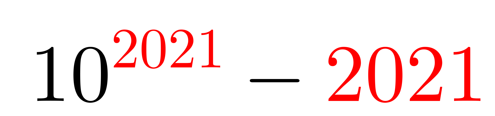
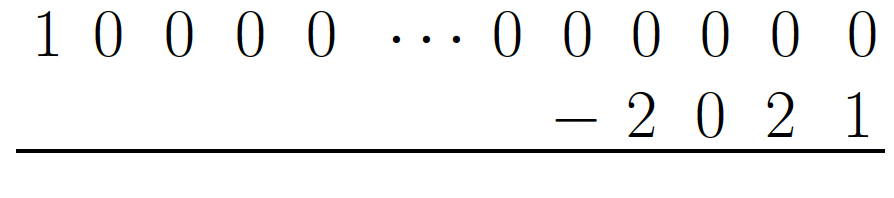
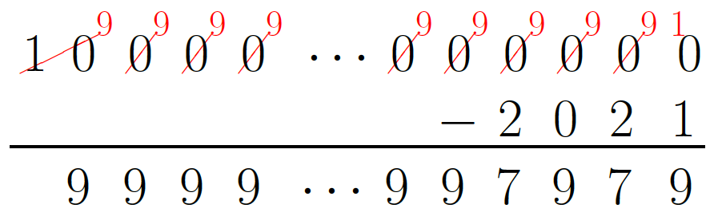
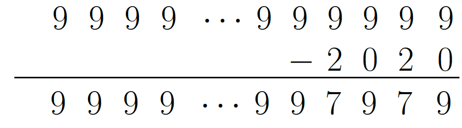

Problem of the Week
Problem D and Solution
An Exponential Year
When the expression \(10^{2021}-2021\) is evaluated, the result is a very large number.
You probably do not have enough time to perform the calculation. So, in an effort to save you some time and paper, instead of evaluating the expression \(10^{2021}-2021\), determine the sum of the digits in the difference.

Solution
Solution 1
When the number \(10^{2021}\) is written out, there is a one followed by 2021 zeroes, for a total of 2022 digits. Let’s look at what happens in our effort to subtract.

Using the standard subtraction algorithm, we start with the rightmost digits. In this case we need to borrow. But the borrowing creates a chain reaction. The result after the borrowing is complete is shown below.

The four rightmost digits in the difference are 7, 9, 7, and 9. To the left of these digits every digit is a 9. But how many nines are there? The difference has one less digit than \(10^{2021}\), so has 2021 digits. We have accounted for the four rightmost digits. So to the left of \(7979\) there are \(2021-4=2017\) nines.
Therefore, the digit sum is \[2017 \times 9 + (7+9+7+9)=18\,153+32=18\,185.\]
Solution 2
The expression \(10^{2021}- 2021\) has the same value as \((10^{2021}-1)- (2021-1)\).
As mentioned in Solution 1, when \(10^{2021}\) is written out, there is a one followed by 2021 zeroes, for a total of 2022 digits. The number \((10^{2021}-1)\) is one less than \(10^{2021}\) and therefore is the positive whole number made up of exactly 2021 nines. When 1 is subtracted from 2021, the difference is 2020. The following is the equivalent subtraction question:

The four rightmost digits in the difference are 7, 9, 7 and 9. To the left of these digits every digit is a 9. But how many nines are there? The difference has one less digit than \(10^{2021}\), so has 2021 digits. We have accounted for the four rightmost digits. So to the left of \(7979\) there are \(2021-4=2017\) nines.
Therefore, the digit sum is \[2017 \times 9 + (7+9+7+9)=18\,153+32=18\,185.\]